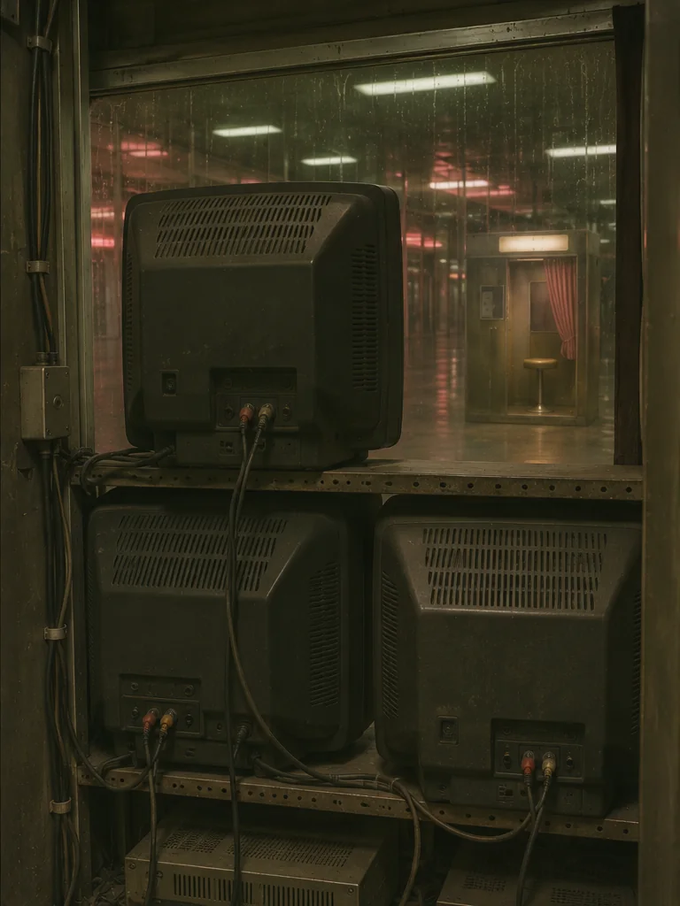
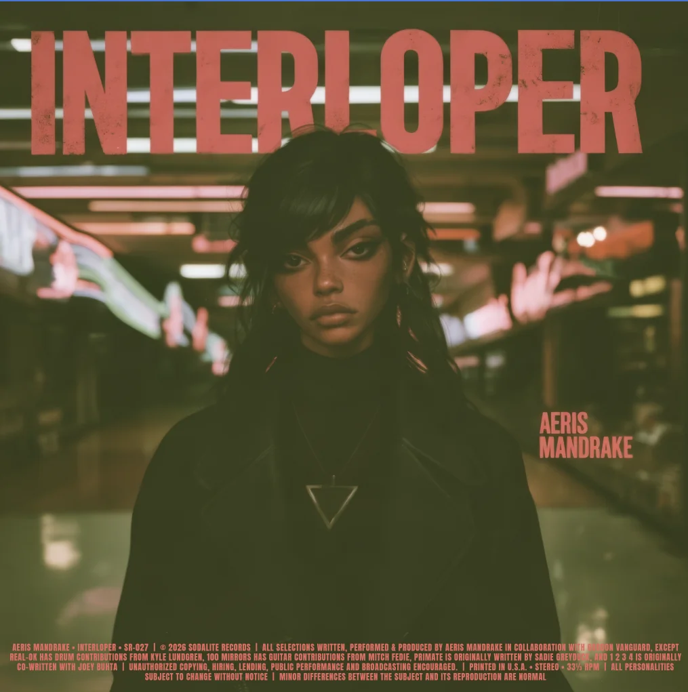
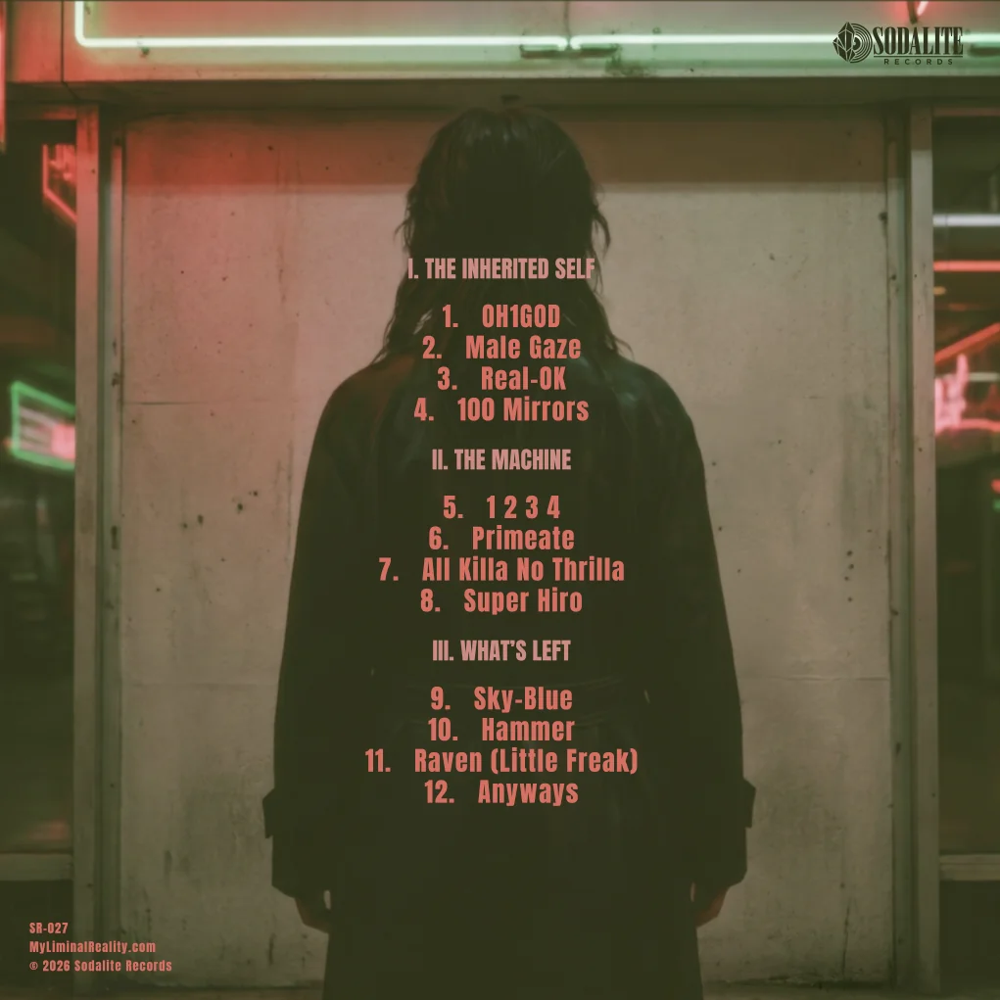

The Inherited Self
Read the floor plan →All three televisions are tuned to the same channel. You look different on each one.
- OH1GOD ↗
- Male Gaze
- Real-OK
- 100 Mirrors
The Machine
Read the floor plan →The fountain is still running.
- 1 2 3 4
- Primeate
- All Killa No Thrilla
- Super Hiro
What’s Left
Read the floor plan →Through the wall, you can still hear the fountain. The directory by the exit has one store left on it.
- Sky-Blue
- Hammer
- Raven (Little Freak)
- Anyways
Floor Plan
← AtriumStart where the water moves. Stop where the screens face you. Finish where you can still hear the water through the wall.
Choose each stop on this map, then return to the floor plan.
Photo Booth
← AtriumThe curtain is closed.
Service Door
← Service corridorThere’s music coming through the wall.
Behind the Televisions
← Floor planThere is just enough room to stand. All three sets face away from you.

UNLISTED AUDIO // RECOVERED FROM BEHIND THE SETS
Don't Let The Cold (Infringed)
The televisions were not playing this. Something behind them was.
Keep the recording ↓Album artwork

